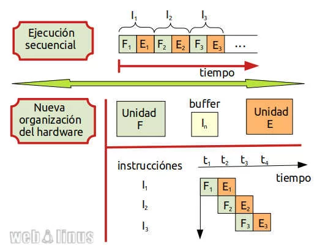
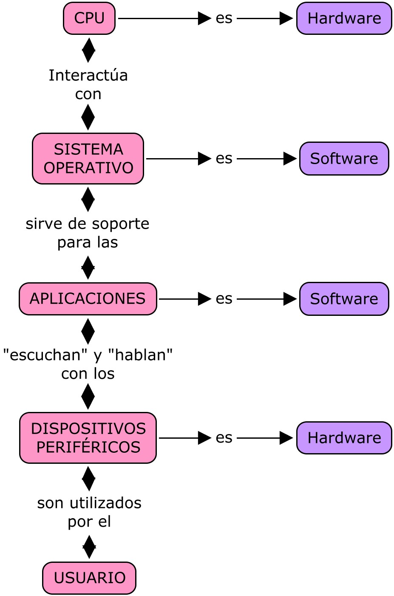
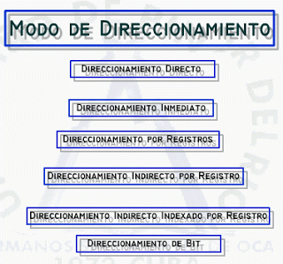

2.3 El ciclo de instrucción
El ciclo de instrucción describe el proceso mediante el cual el procesador obtiene, interpreta y ejecuta las instrucciones almacenadas en la memoria. Se compone de varias etapas fundamentales que permiten transformar código binario en acciones concretas.
2.3.1 Ciclo Fetch-Decode-Execute
El ciclo básico del procesador consta de tres etapas:
- Fetch (búsqueda): Se obtiene la siguiente instrucción desde la memoria, usando el Contador de Programa (PC).
- Decode (decodificación): La unidad de control interpreta la instrucción para determinar la operación a realizar y los operandos involucrados.
- Execute (ejecución): Se ejecuta la operación correspondiente (cálculo, movimiento, comparación, salto, etc.).
2.3.2 Segmentación de instrucciones
La segmentación, o pipelining, es una técnica que permite ejecutar varias instrucciones en diferentes etapas del ciclo al mismo tiempo. Divide el procesamiento en fases como búsqueda, decodificación, ejecución y escritura de resultados.
De esta forma, mientras una instrucción se ejecuta, otra puede ser decodificada y otra leída, maximizando el uso del procesador.
2.3.3 Conjunto de instrucciones: características y funciones
El conjunto de instrucciones (ISA) representa las operaciones básicas que puede realizar un procesador. Cada familia de CPU tiene su propio conjunto, como x86, ARM o MIPS. Las instrucciones se clasifican por su funcionalidad:
- Aritméticas: Suma, resta, multiplicación, división.
- Lógicas: AND, OR, XOR, NOT.
- Transferencia de datos: MOV, LOAD, STORE.
- Control: Saltos condicionales e incondicionales (JMP, CALL, RET).
Las instrucciones se componen típicamente de un código de operación (opcode) y operandos.
2.3.4 Modos de direccionamiento y formatos
Los modos de direccionamiento definen cómo se localizan los operandos de una instrucción. Los más comunes incluyen:
- Inmediato: El operando está incluido en la misma instrucción.
- Directo: La instrucción contiene la dirección del operando en memoria.
- Indirecto: La instrucción apunta a una dirección que a su vez contiene otra dirección.
- Por registro: El operando se encuentra en un registro.
- Indexado: Se suma un desplazamiento a una dirección base o a un registro índice.
El formato de instrucción se refiere a la manera en que se distribuyen los campos dentro de la instrucción binaria, como el opcode, los registros fuente y destino, y los valores inmediatos.
